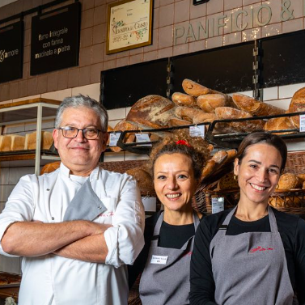

.

Chi siamo
Da generazioni, nel cuore del nostro quartiere, sforniamo ogni giorno pane fragrante, focacce dorate e dolci che sanno di tradizione. Al Forno, crediamo che il pane non sia solo cibo, ma un abbraccio caldo che accompagna ogni momento della giornata. Vieni a trovarci e lasciati conquistare dai sapori autentici di una volta.
I nostri prodotti
Pane
Farina biologica macinata rigorosamente a pietra, acqua e lievito madre. Il pane fatto come una volta segue i ritmi della tradizione. Ogni giorno ci dedichiamo a una grande varietà di impasti per rispondere ai gusti di tutti i nostri clienti.


Pizze e focacce
Consistenza soffice o croccante, svariate farciture a condimento, gusto autentico. Pizze e focacce sono prodotti iconici della cucina italiana e immancabili nei nostri negozi nel mondo, fin dalle prime ore della giornata. Una prelibatezza per gli amanti della prima colazione salata.
Dolci da forno
Biscotti fragranti, torte soffici e cornetti dorati: ogni morso racconta il sapore autentico della tradizione. Preparati con ingredienti genuini e tanto amore, i nostri dolci sono perfetti per accompagnare una colazione speciale o una pausa golosa.

Orari d'apertura
| Martedì - Sabato | 8:00 - 13:30, 14:30-18:30 |
|---|---|
| Lunedì | 8:00 - 13:30 |
| Domenica | Chiuso |
|
Servizio di consegna
|
|
|---|---|
| Martedì - Sabato | 8:00 - 13:30, 14:30-18:30 |